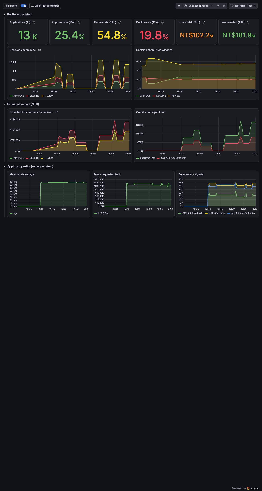
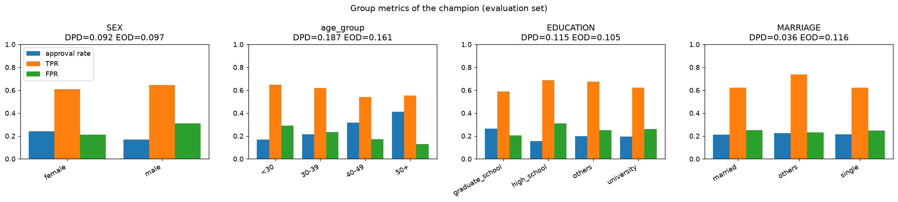
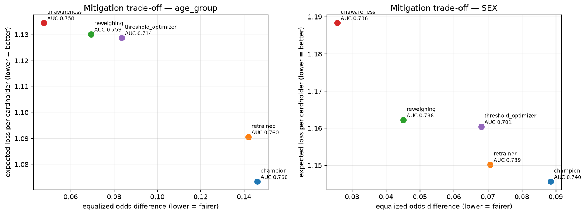

ddm501 / final-project / group-5
Credit Default Risk Scoring
từ notebook đến production
Chấm điểm hành vi chủ thẻ đang lưu hành cho quản lý hạn mức. Hệ thống MLOps end-to-end: train → registry → serving → monitoring → drift → retrain có quality gate, triển khai trên Ubuntu.
agenda.yaml · ~19 phút
Lộ trình trình bày
01 · problem
Quản lý hạn mức: giữ hạn mức cho chủ thẻ sắp vỡ nợ
đắt gấp 10 lần hạ nhầm hạn mức của người trả tốt.
Bối cảnh
Hàng trăm nghìn thẻ đang lưu hành. Rà soát hạn mức thủ công theo quý; yêu cầu tăng hạn mức qua app mất 1–3 ngày. Sau mỗi kỳ sao kê, hệ thống dự báo P(default) kỳ thanh toán kế tiếp của từng chủ thẻ. Dữ liệu: UCI Default of Credit Card Clients — 30.000 chủ thẻ, default rate ≈ 22%.
Chi phí bất đối xứng
FN = 10: giữ / tăng hạn mức cho người sắp vỡ nợ → mất dư nợ + phần hạn mức vừa tăng (≈ hạn mức × LGD 0.45). FP = 1: hạ / khoá nhầm người trả tốt → mất doanh thu, khách rời bỏ. Đánh giá thêm bằng expected loss trên mỗi chủ thẻ.
Quyết định 3 mức
APPROVE khi PD < 0.30 · REVIEW khi < 0.60 · DECLINE còn lại. REVIEW luôn qua chuyên viên rủi ro (human-in-the-loop).
Model chỉ là 5–10% hệ thống — phần còn lại là dữ liệu, serving, giám sát và vận hành.
01 · use case · realtime vs batch
Realtime khi chủ thẻ đang chờ, batch sau mỗi kỳ sao kê
| Use case | Kích hoạt | Chế độ | Endpoint |
|---|---|---|---|
| Duyệt yêu cầu tăng hạn mức (tạm thời / vĩnh viễn), rút tiền mặt, chuyển trả góp | Chủ thẻ gửi trên mobile app / Internet banking, chờ kết quả trong phiên | Realtime | POST /api/v1/predict |
| Rà soát hạn mức toàn danh mục (giữ / tăng / giảm / tạm khoá), gia hạn thẻ | Job sau mỗi kỳ sao kê, chia lô ≤ 500 | Batch | POST /api/v1/predict/batch |
| Cảnh báo sớm cho chuyên viên rủi ro — chỉ theo dõi, nhắc nợ mềm | Job sau kỳ sao kê | Batch | /predict/batch + /explain |
| Giải thích quyết định, adverse action notice | Tài khoản vào vùng REVIEW / DECLINE | On-demand | POST /api/v1/explain |
APPROVE · P < 0.30
Chấp thuận tăng hạn mức; rà soát định kỳ thì giữ / đề xuất tăng. recommended_limit = min(LIMIT_BAL × 1.25, 500.000).
REVIEW · 0.30 – 0.60
Chuyển Credit Risk Analyst xem xét (human-in-the-loop). Đề xuất hạ hạn mức: min(LIMIT_BAL × 0.5, 100.000).
DECLINE · P ≥ 0.60
Từ chối tăng hạn mức; rà soát định kỳ thì tạm khoá hạn mức khả dụng (limit 0, dư nợ vẫn phải trả). Bắt buộc reason codes SHAP + adverse action notice.
01 · requirements → evidence
Yêu cầu đo được, và kết quả đạt
| Yêu cầu | Mục tiêu | Đạt được | Bằng chứng |
|---|---|---|---|
| Chất lượng model | ROC-AUC ≥ 0.70 (quality floor) | CV 0.7513 · holdout 0.7700 | reports/model_comparison.md |
| Độ trễ serving | p95 < 100 ms | p95 18.8 ms (server 8.8 ms) | make bench |
| Độ sẵn sàng | error < 5% · uptime 99.9% | 0 lỗi / 2.500 request mô phỏng | Grafana Infra & SLA |
| Phát hiện drift | PSI ≥ 0.25 hoặc drift share ≥ 50% | phân tích mỗi 30 phút | DAG drift_monitoring |
| Retrain an toàn | không promote model kém hơn | gate + tự rollback | DAG model_retrain |
| Công bằng | DI ≥ 0.8 (four-fifths) | WARN: AGE DI 0.41 | reports/fairness_report.md |
02 · architecture · ngữ cảnh hệ thống
Ai dùng hệ thống, và hệ thống phụ thuộc vào đâu
3 nhóm người dùng: Credit Risk Analyst (xử lý REVIEW, cảnh báo sớm, đọc giải thích), MLOps Engineer (vận hành, retrain), Risk & Compliance (fairness, audit).
Hệ thống ngoài: CMS / mobile app backend gọi /predict realtime; batch limit-review job gọi /predict/batch sau kỳ sao kê; UCI dataset; GitHub Actions + GHCR; Telegram nhận alert.

02 · architecture · container
15 service, 3 profile Compose
core — API FastAPI, MLflow, PostgreSQL, MinIO (+ 2 job khởi tạo)
monitoring — Prometheus, Alertmanager, Grafana, drift-monitor (Evidently), statsd-exporter, alert-webhook
orchestration — Airflow 2.10 webserver + scheduler (+ init)
make up · make health · 12 long-running + 3 one-shot

02 · architecture · adr
6 quyết định kiến trúc, mỗi cái có trade-off
FastAPI serving
Async, OpenAPI tự sinh, Pydantic validate schema → lỗi 422 rõ ràng. Đổi lại: tự lo batching.
MLflow + Postgres + MinIO
Registry có alias @champion, artifact S3-compatible, chạy offline. Thêm 3 container.
Airflow thay cron
DAG có retry, trigger rule, lịch sử run, metric statsd. Thêm 3 container, nặng hơn cron.
Evidently + PSI
PSI cho feature chính (dễ giải thích), Evidently cho drift share toàn bộ. Cần ≥ 50 mẫu/cửa sổ.
Compose thay Kubernetes
1 máy Ubuntu, deploy/rollback bằng release dir. Không auto-scale, không HA.
src layout + config phân lớp
Package credit_risk, YAML theo môi trường, bí mật chỉ qua .env. Nhiều file config hơn.
docs/adr/0001 … 0006
03 · ml pipeline
4 thuật toán, cùng một quy trình tái lập
3df05ace| Model | CV ROC-AUC | Holdout ROC-AUC | PR-AUC | Recall | Expected loss |
|---|---|---|---|---|---|
| Logistic Regression ✓ | 0.7513 ± 0.015 | 0.7700 | 0.5688 | 0.621 | 1.003 |
| XGBoost | 0.7509 ± 0.013 | 0.7671 | 0.5671 | 0.563 | 1.097 |
| LightGBM | 0.7488 ± 0.012 | 0.7678 | 0.5705 | 0.579 | 1.079 |
| Random Forest | 0.7472 ± 0.011 | 0.7657 | 0.5635 | 0.534 | 1.143 |
LR thắng CV ROC-AUC, có expected loss thấp nhất và dễ giải thích — boosting không đáng thêm độ phức tạp.
03 · champion / challenger
Retrain tự động, nhưng không bao giờ promote model kém hơn
PromotionPolicy
- ROC-AUC challenger ≥ 0.70 (floor)
- không giảm quá 0.005 so với champion
- expected loss không tệ hơn champion
Khi thất bại
- dưới floor → giữ champion, alert
RetrainFailed - API không nạp đúng version →
rollback_champion - trigger từ drift có cooldown 60 phút
dag: drift_monitoring · */30 phút
không drift / chưa đủ 50 mẫu → skip · chỉ prediction shift → alert, không retrain
dag: model_retrain
Sequence đầy đủ: docs/assets/diagrams/06-retrain-sequence.svg
04 · deployment · serving
API không bao giờ “chết im lặng”
# yêu cầu tăng hạn mức · X-API-Key bắt buộc { "default_probability": 0.41, "credit_score": 612, "risk_decision": "REVIEW", "recommended_limit_ntd": 100000.0, "model_version": "1", "served_by": "mlflow_registry" } 401 MISSING_API_KEY 403 INVALID_API_KEY 422 VALIDATION_ERROR 413 BATCH_TOO_LARGE 503 MODEL_UNAVAILABLE
Chuỗi nạp model (ModelManager)
MLflow @champion → file joblib cục bộ (degraded) → không có model (503). Không bao giờ hạ cấp khi đang chạy model từ registry.
Health rõ nghĩa
/health/live: process còn sống. /health/ready: ready / degraded / not_ready — Docker healthcheck và smoke test dùng endpoint này.
04 · deployment · ubuntu + cd
Tag v* → image đã scan → deploy có rollback

releases/<tag> · symlink currentprevious_release05 · monitoring · grafana
4 dashboard, 4 câu hỏi
Business — bao nhiêu tài khoản giữ/tăng, xem xét, khoá hạn mức; rủi ro NT$ bao nhiêu?
ML model — model nào đang chạy, phân phối điểm có lệch?
Drift — dữ liệu mới còn giống dữ liệu train không?
Infra & SLA — API sống, nhanh, ít lỗi?
Dashboard sinh từ code · màu quyết định cố định · ngưỡng = ngưỡng alert

05 · monitoring · alerting
11 alert, mỗi alert có runbook
| Nhóm | Alert |
|---|---|
| Service | APIDown · HighErrorRate > 5% · HighLatencyP95 > 100 ms |
| Model | ModelNotLoaded · ModelServedFromFallback · PredictionDistributionShift (PSI ≥ 0.25) |
| Drift | DataDriftDetected · DriftMonitorDown · DriftAnalysisStale |
| Pipeline | RetrainFailed · AirflowDagImportErrors |
Luồng cảnh báo
Prometheus rule → Alertmanager → webhook → Telegram. Rule có unit test bằng promtool.
Airflow DAG
drift_monitoring (*/30) · model_retrain · service_health_check. Metric DAG qua statsd-exporter lên Grafana.
Chaos đã tập
make chaos-api-down, chaos-model-unloaded, chaos-latency, chaos-drift-down → alert bật → chaos-restore.
05 · data flow · edge cases
Luồng dữ liệu, và điều gì xảy ra khi nó gãy

Sai schema
Pydantic chặn → 422 VALIDATION_ERROR, không chạm model, đếm trong metric HTTP.
Model chưa nạp
503 MODEL_UNAVAILABLE, ready = not_ready, alert ModelNotLoaded.
MLflow sập
Giữ model registry đang chạy; khởi động lạnh → joblib degraded + ModelServedFromFallback.
06 · testing / ci-cd
Test cả code, dữ liệu và model
+ e2e, load test, promtool cho alert rule, --check cho dashboard, actionlint cho workflow.
lint ruff · black --check · mypy test 4 suite + coverage gate ≥ 80% image multi-stage build · Trivy CRITICAL = fail smoke compose up → /health/ready → predict # tag v* → CD: publish GHCR → SSH deploy → smoke → rollback
model_validation kiểm tra model đạt ngưỡng chấp nhận; data_quality kiểm tra schema, range và manifest khớp dữ liệu.
07 · responsible ai · fairness
Audit trên 10.000 chủ thẻ: cả 4 thuộc tính đều WARN

| Thuộc tính | DPD | EOD | DI |
|---|---|---|---|
| Tuổi | 0.187 | 0.161 | 0.408 |
| Học vấn | 0.115 | 0.105 | 0.588 |
| Giới tính | 0.092 | 0.097 | 0.709 |
| Hôn nhân | 0.036 | 0.116 | 0.932 |
Vì sao
- Model dùng trực tiếp SEX/AGE/EDUCATION/MARRIAGE
- Dữ liệu train chỉ có chủ thẻ ≥ 30 tuổi → nhóm < 30 là out-of-distribution
- Base rate khác nhau giữa các nhóm
Ngưỡng: DPD/EOD > 0.1, DI < 0.8
07 · responsible ai · mitigation
Giảm bias gần như miễn phí về ROC-AUC
| Nhóm tuổi | ROC-AUC | DPD | DI | Exp. loss |
|---|---|---|---|---|
| Champion | 0.7599 | 0.182 | 0.772 | 1.073 |
| Reweighing | 0.7593 | 0.067 | 0.911 | 1.130 |
| Unawareness | 0.7585 | 0.055 | 0.926 | 1.135 |
| ThresholdOptimizer | 0.7137 | 0.025 | 0.963 | 1.129 |
ThresholdOptimizer cần thuộc tính nhạy cảm lúc ra quyết định → không khuyến nghị cho production.

Explainability
SHAP (global + local) và LIME đồng thuận; SHAP nối vào POST /api/v1/explain để trả lý do cho từng chủ thẻ.
Privacy
Log redact mọi trường dữ liệu chủ thẻ · HMAC pseudonym với khoá trong .env · inference log giữ 90 ngày.
Ethics
REVIEW luôn qua chuyên viên rủi ro · DECLINE (từ chối tăng / tạm khoá hạn mức) kèm reason codes, adverse action notice và kênh khiếu nại.
08 · live demo · ~4 phút
Từ yêu cầu tăng hạn mức đến quality gate
# 1 · yêu cầu tăng hạn mức trên app: REVIEW 0.36 · DECLINE 0.99 python scripts/sample_predict.py # 2 · rà soát sau kỳ sao kê: 2 chủ thẻ → APPROVE 1 · DECLINE 1 swagger POST /api/v1/predict/batch · two_cardholders # 3 · dữ liệu lệch → Drift dashboard + DataDriftDetected make simulate SCENARIO=drift # 4 · retrain qua quality gate → promote hoặc giữ champion make drift-dag && make registry # 5 · gate fail → champion không đổi + RetrainFailed make retrain-fail && make alerts # 6 · (tuỳ giờ) API sập → DOWN → phục hồi make chaos-api-down && make chaos-restore
Mở sẵn 6 tab
Grafana kiosk ×3 (Infra, Drift, ML) :13000 · Airflow :18080 · Swagger :18020/docs · MLflow :15040
Dự phòng
Mỗi bước có ảnh chụp và output mẫu trong demo script; nếu DAG chậm, chuyển sang bước tiếp và quay lại.
09 · lessons learned
Điều nhóm học được
1 · Số liệu phải sinh ra, không được gõ vào
Report, model card, docs đều render từ JSON do pipeline tạo. Khi retrain, tài liệu tự đúng theo.
2 · Fallback chỉ có giá trị khi quan sát được
Chế độ degraded mà không có metric + alert thì chỉ là lỗi bị giấu đi.
3 · Observability cũng cần ngân sách
Grafana 13 chạm trần 384 MiB khiến dashboard không mở được — phát hiện khi rà soát dashboard, nâng lên 768 MiB và tắt plugin thừa.
4 · Fairness phải đo từ sớm
Thiết kế chia dữ liệu theo tuổi (để mô phỏng drift) vô tình tạo ra bias tuổi. Audit sớm hơn sẽ đổi cách chia.
Hỏi & đáp
Cảm ơn hội đồng đã lắng nghe.